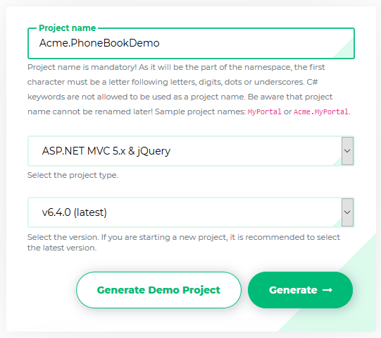
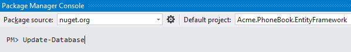

This document is aimed to create and run an ASP.NET Zero based project in just 5 minutes. It's assumed that you already purchased and created your ASP.NET Zero account.
Login to this web site with your user name and password. Then you will see Download link on the main menu.
Go to the download page. You will see a form as shown below:

Select "ASP.NET MVC 5.x & jQuery" or "ASP.NET MVC 5.x & Angularjs 1.x" based on your preference. Your project will be ready in one minute. After extacting the downloaded zip file and opening solution in Visual Studio, you will see solution structure as shown below:
Right click the .Web project and select "Set as StartUp project": Then build the solution. It make take longer time in first build since all nuget packages will be restored.
Open web.config file in the .Web project and change the Default connection string if you want:
<add name="Default" connectionString="Server=localhost; Database=PhoneBook; Trusted_Connection=True;" providerName="System.Data.SqlClient" />
You have two options to create and migrate database to the latest version.
AspNet Zero solution includes a .Migrator (like Acme.PhoneBook.Migrator) project in the solution. You can run this tool for database migrations on development and production (see development guide for more information).
You can also use Entity Framework's built-in command line tools for migrations.
Open Package Manager Console (Under Tools\Nuget Package Manager in the main menu), select .EntityFramework project as Default project and run Update-Database command.

This command will create your database and fill initial data. You can open SQL Server Management Studio to check if database is created:

You can use EF console commands for development and Migrator.exe for production. But notice that; Migrator.exe supports running migrations in multiple databases at once, which can be useful in development/production for multi tenant applications.
ASP.NET Zero supports multi-tenant and single-tenant applications. Multi-tenancy is enabled by default. If you don't have idea about multi-tenancy or don't want to create a multi-tenant application, you can disable it by setting AbpZeroTemplateConsts.MultiTenancyEnabled to false in the .Core project.
All ready.. just run your solution. It will open home page of your web site. You can click login link at top right corner to login to the application:

Enter default as tenancy name (this field is shown if multi-tenancy is enabled), admin as user name and 123qwe as password. You should change password at first login. After login to the application, you will see sample dashboard screen:

If your application is multi-tenant, then you can leave tenancy name as empty in login screen and use admin as user name and 123qwe as password to login as host admin.
Your solution is up and working. See development guide document for more information.